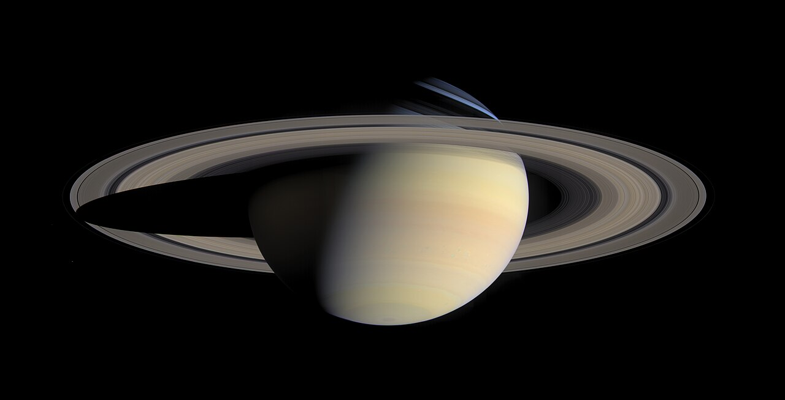
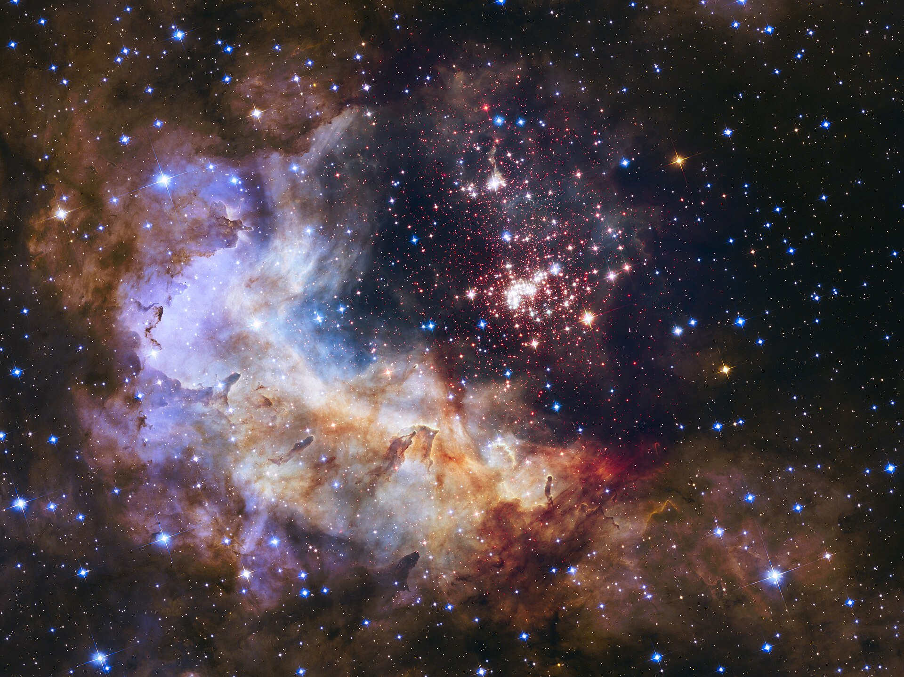
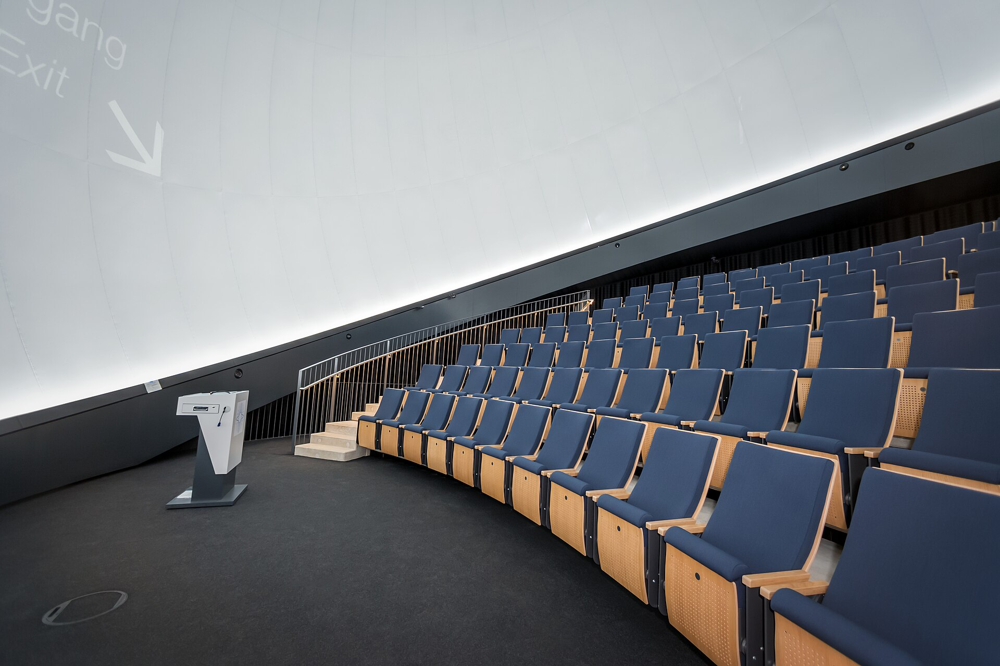
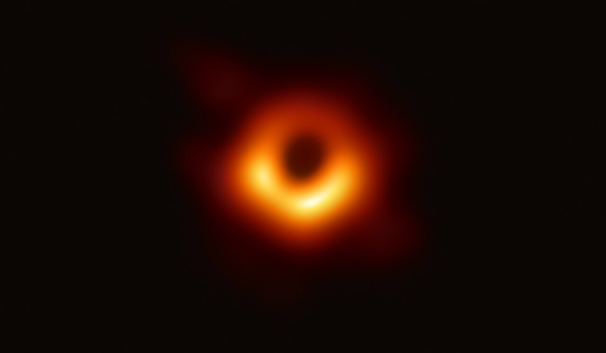
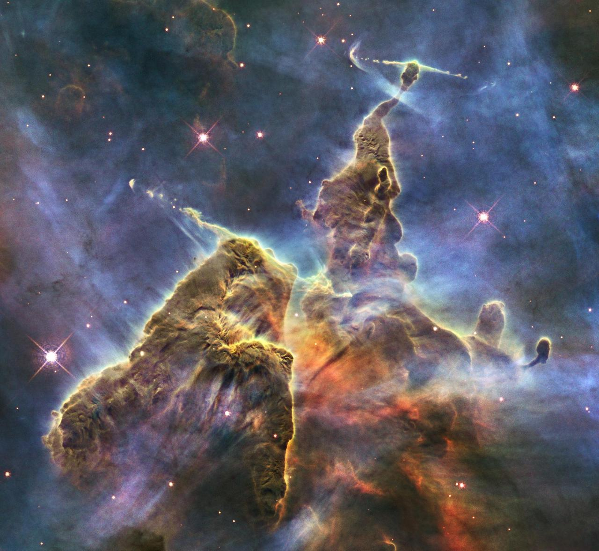
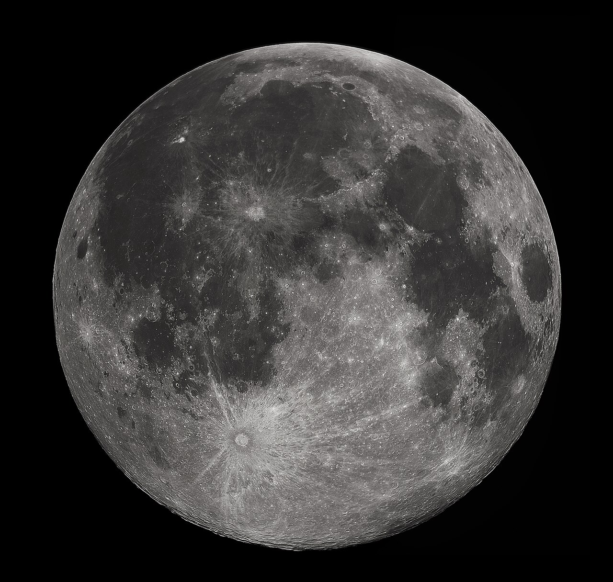
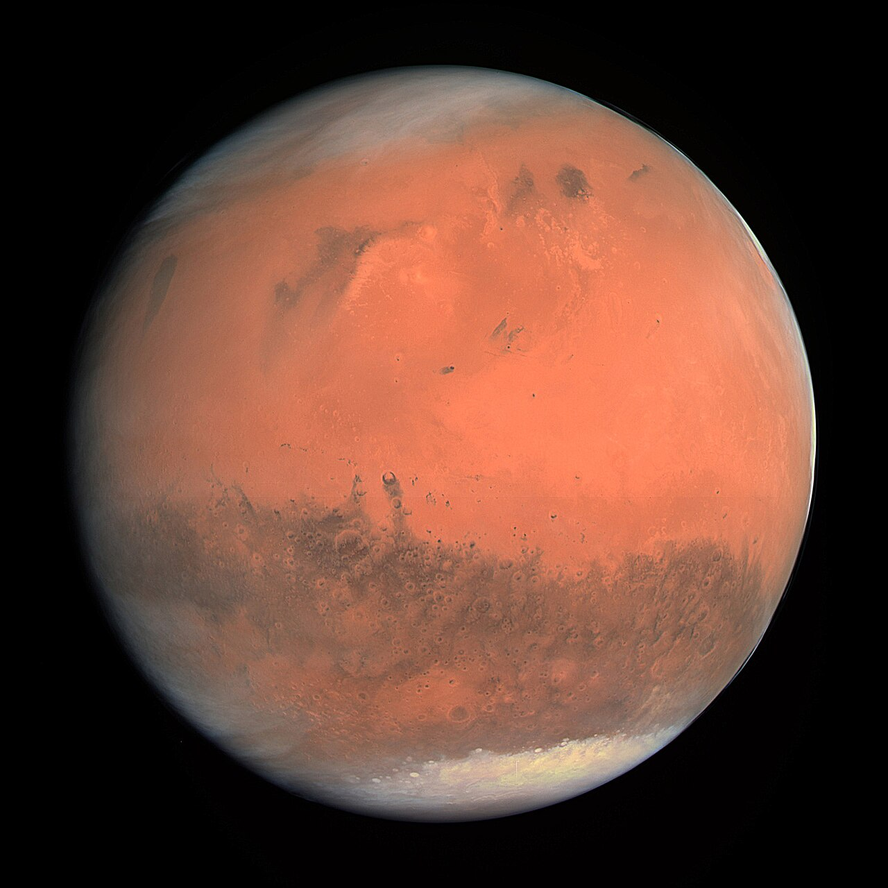
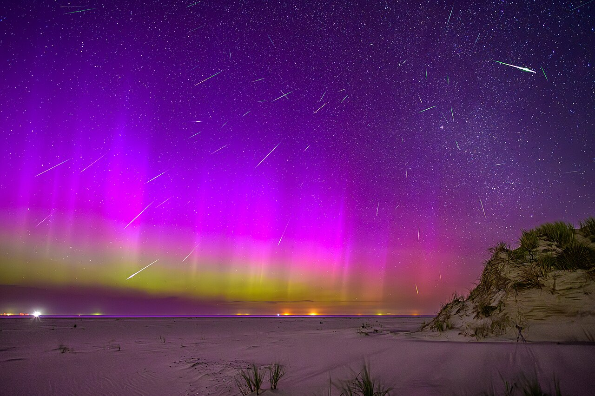

6+Солнечная система
Пролетаем над кольцами Сатурна, спускаемся в атмосферу Юпитера и разбираемся, почему Земля — редкая удача.
650 ₽45 минут
Пн–Вс
Полнокупольные фильмы, живые лекции астрономов и вечерние наблюдения в телескоп — в десяти минутах от метро «Петроградская».

«Орион» открылся в 2008 году как небольшая обсерватория при университете. Сегодня это планетарий с двенадцатиметровым куполом, лекторий и две обсерватории на крыше.
Наши лекторы — астрономы, физики и выпускники профильных факультетов. Мы рассказываем о чёрных дырах и экзопланетах без формул, но и без упрощений: на любой вопрос найдётся честный ответ.
Каждая программа — это лекция астронома и полнокупольный фильм. Продолжительность указана вместе с ответами на вопросы.

6+Пролетаем над кольцами Сатурна, спускаемся в атмосферу Юпитера и разбираемся, почему Земля — редкая удача.

12+Что происходит за горизонтом событий и почему первое фото M87 изменило астрофизику.

6+Столпы Созидания и звёздные ясли: как из холодного газа рождается свет.

6+22 июля 1969 года и то, что мы узнали о Луне за следующие пятьдесят лет.

12+Роверы, пылевые бури и главный вопрос: сможет ли человек жить на Марсе.

0+Путешествие к полярному кругу: физика авроры и лучшие места для наблюдения.
Билет действует на конкретную программу. Студенческий тариф — при предъявлении студенческого билета.
Оплата картой на входе или онлайн. Возврат — не позднее чем за 24 часа до сеанса.
Одинаково для всех программ, кроме вечерних наблюдений
| Дни | Сеансы |
|---|---|
| Пн — Чт | 11:00 · 13:30 · 16:00 · 19:00 |
| Пт — Сб | 11:00 · 13:30 · 16:00 · 19:00 · 21:30 |
| Вс | 11:00 · 13:30 · 16:00 |
Ходили с детьми на «Солнечную систему» — сын потом неделю рисовал Сатурн. Лектор отвечал на все вопросы, даже самые странные.
Были на вечернем наблюдении: видели кольца Сатурна и двойную звезду. Купол впечатляет, а звук — отдельный вид искусства.
Студенческий билет сработал, взяла ещё и на «Чёрные дыры». Объясняют физику понятно, без формул. Вернусь на лекцию об экзопланетах.
На вечерние сеансы и выходные — да: места обычно заканчиваются за два-три дня. В будни днём можно прийти без брони.
Да, программы 0+ и 6+ адаптированы для детей. Учтите, что в зале темно, а звук в куполе громче обычного.
Наблюдения в телескоп мы переносим на другой день или возвращаем стоимость той части билета, которая относится к наблюдению.
Да, бесплатная парковка на 40 мест, въезд с улицы Профессора Попова. В вечерние часы места обычно есть.
Мы работаем каждый день, кроме последнего вторника месяца — в этот день обслуживаем оборудование.